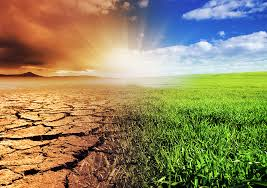
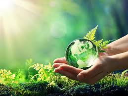
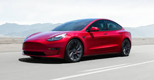
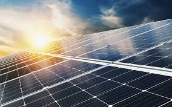

The environment we live in will change dramatically in the next 50 years.
 Our environment is closely connected with society. This is like a chain: if we destroy the ecosystem, we couldn't live longer. In my opinion our community every day destroys planet. Nowadays there are two main ways of destruction: The first thing is the nature destruction. We are mining resources for jewerly, technologies, etc. But these resourses aren't unlimited and amount of them extremely decreasing. The next 50 years we will have low percentage of resources we have now on my opinion.
The second aspect is water and air pollution. For example, many cars emit exhaust fumes, and factories also use chemicals which harm the earth's air system. In addition, water is also affected by trash and things like food waste, which can cause the fish in lakes, rivers and seas to die. As a result, people can not breathe fresh air or drink enough water, and sometimes they will need other facilities to make oxygen and purify the water.
 But I think that's not a problem because nowadays we are closer to make alternative energy, which resolves problem about air pollution and some resouces mining. We began use electric autos which can work on alternative energy and don't emit exhaust, use components, which don't need to mine components, recycling trash to avoid the water pollution and make reusable products.
 So, I think our planet will be save at least 100 years because we have such a good progress in alternative technologies and taking care about our environment which slowly getting better to live nowadays.